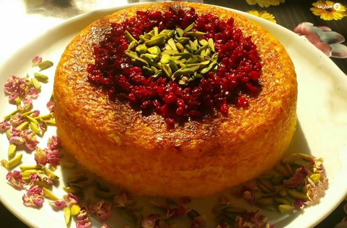

Tahchin

Tahchin is a savory Persian rice cake, made with layers of rice, yogurt, saffron, and tender chicken, all baked to a golden, crispy perfection.
It's a beloved comfort food that’s both fragrant and flavorful, offering a delicious balance of textures.
Ingredients
-
2 cups basmati rice (washed)
-
500g chicken breast (cooked and shredded)
-
1 cup plain yogurt
-
2 eggs
-
1/4 cup vegetable oil or melted butter
-
1/4 tsp saffron (dissolved in hot water)
-
1 onion (chopped)
-
1 tsp turmeric
-
Salt and pepper (to taste)
-
1/4 cup barberries (optional, for garnish)
Steps
-
Cook Rice: Parboil the rice in salted water for about 7-8 minutes, drain and set aside.
-
Prepare Chicken: Cook the chicken with chopped onion, turmeric, salt, and pepper. Shred the chicken once cooked.
-
Make Yogurt Mixture: In a bowl, combine yogurt, eggs, saffron water, and melted butter or oil.
-
Mix: Combine the parboiled rice, shredded chicken, and yogurt mixture, mixing well.
-
Layer: Grease a baking dish and layer the rice mixture. Press down to compact.
-
Bake: Cover with foil and bake at 180°C (350°F) for 1 hour. Remove foil for the last 10-15 minutes to crisp the top.
-
Serve: Garnish with barberries (optional) and serve hot.
Homepage